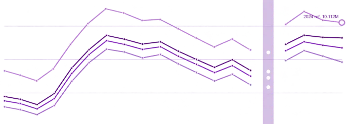
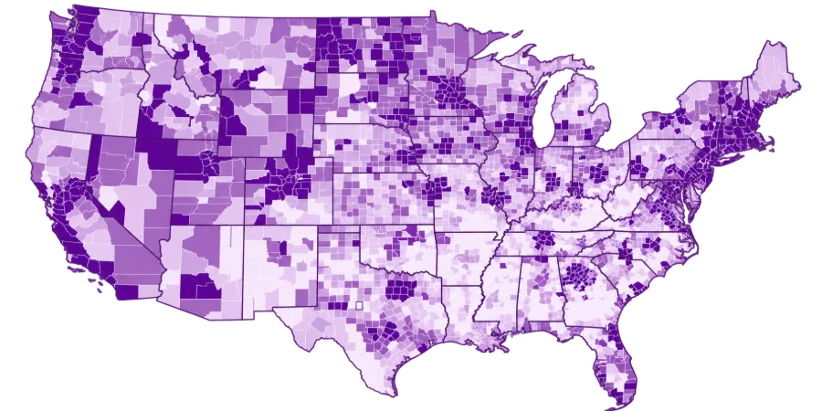

US Worst Case Housing Explorer
Explore housing needs through data, trends, and maps.
Explore the toolNYU School of Professional Studies
Research, events and classes that turn what industry, media and academia know into something cities can use.
NYU Urban Lab · Schack Institute of Real Estate
Research and learning for better cities. Connecting real estate, policy, culture, and the people who call a city home.
Scroll through the four areas01 Research area
A city begins with a place to call home.
How can more people afford to live in the cities they help shape? We explore housing costs, development economics, and the policies that expand access to homes.
Explore Housing Affordability
02 Research area
Make room for a greener urban future.
Buildings are part of a larger system. Energy, transportation, and green infrastructure connect the places we live to the health of our cities.
Explore Net Zero Cities
03 Research area
Build together. Create public value.
What can public and private partners achieve together? Our research examines how shared resources, responsibilities, and risk can meet public needs.
Explore Public Private Development04 Research area
Give a place a life of its own.
Arts, cultural spaces, and local identity shape how a neighborhood grows. Explore the role of culture in development, community life, and public benefit.
Explore Culture-Led Development
From NYU Urban Lab and affiliated faculty.
Drag, swipe or use the arrow keys. Click the open book to read it.

Explore housing needs through data, trends, and maps.
Explore the tool
Explore rent-ceiling and housing affordability analysis.
Explore the toolResearch summaries, housing perspectives, and conversations about cities.
Austin’s transition is a story of one of the nation’s most affordable large rental markets to a city poised for renewed rent growth. After experiencing a
Read moreIn the race to answer the urgent question of what happens next in a warming world, governments, multilateral institutions ( read more ), and private actors are…
Read moreExplore opportunities to learn, contribute, and connect with NYU Urban Lab.
Discover the Lab’s focus areas and connect with its research community.
Meet the team ↗︎Get in touch about shared research interests and opportunities for discussion.
Partners & collaborations ↗︎Questions, ideas or a conversation to start. Write to the Lab.
Contact the Lab ↗︎